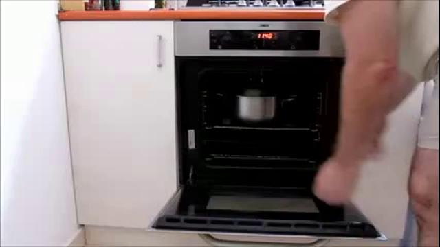
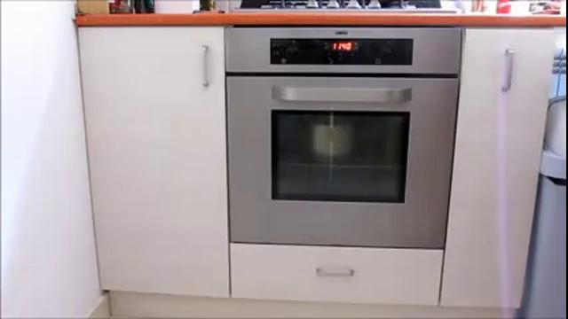
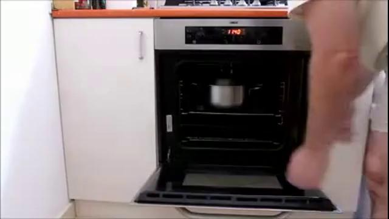

32%
The answer may still be visible.
Recent frames alone suffice for 128 of 400 sampled historical questions. Answering these questions does not require earlier visual input.
TWINPAST / STREAMING VIDEO UNDERSTANDING
A correct answer about the past does not tell us whether a model used that past.
TwinPast changes the history while keeping recent frames and text identical, testing whether answers change correctly with the evidence.
350 human-reviewed pairs · 700 videos · 5 historical tasks
01 / THE EVALUATION PROBLEM
We audited OVO-Bench and StreamingBench. A question about the past can be answered without observing that past in two ways.
Recent frames alone suffice for 128 of 400 sampled historical questions. Answering these questions does not require earlier visual input.
Qwen3-VL-8B and DeepSeek-Flash reach these accuracies using only the question and options, on the same 4,276 questions.
Paper §3. The 32% refers to the additional historical-task sample, not either benchmark as a whole. Text-only accuracy covers the full evaluated question set.
The test we need: when the relevant history changes, does the answer change correctly?
02 / THE TWINPAST DESIGN
Keep the question, ordered options, and recent frames fixed. Change the historical evidence and its correct answer.
Recent frames, question, and options stay identical.The earlier boat evidence determines the answer.
Two independent evaluations · The same question and options · Both answers must be correct
PairAcc is the fraction of pairs with both answers correct. Each video is evaluated independently. Repeating an answer favored by their shared inputs can get one branch right, but cannot solve the pair.
Illustration using the boat example. These are example predictions, not model results.
One correct answer is not enough to solve this pair.
We contrast the queried attribute, state, event, count, or temporal relationship. Backgrounds, viewpoints, and unrelated objects are matched as closely as the source material permits; the recent frames are identical.
Every pair, question, and answer key receives human review after automatic and AI-assisted checks. Residual differences can remain in the histories. The boxes above highlight the queried region; they are not exact editing masks.
03 / EXPLORE THE DATASET
Eight examples from 350 reviewed pairs. Recall attributes and states; reason about order, counts, and multiple events.
A reader’s side-by-side view. During evaluation, each video is processed independently, with a separate conversation and memory. In the streaming setting, the question and options arrive only at query time.
Retrieve an entity's identity or attributes from an earlier event.
Choose play to load this pair. All videos retain their full timeline.
The recent context is shared.
The earlier evidence tells them apart.
04 / WHAT PAIRED EVALUATION REVEALS
34 model and input configurations. Individual accuracy and paired success tell different stories.
+34.00percentage points in PairAcc
with historical input
Selected model: Qwen3-VL-8B. Compare recent and historical input within each row.
Paper Tables 1–2. Metrics and aggregation differ across benchmarks. These input conditions do not isolate the effect of frame count alone.
FINDING 2
The gap extends across all five historical tasks. The best evaluated streaming system is 17.43 percentage points below the lowest-scoring evaluated general-purpose model.
Paper Table 2 and Figure 3. Streaming systems process video sequentially; general-purpose models use native video APIs with the complete video and question. These are results under different input and inference protocols, not an isolated comparison of architecture.
The gap also appears within a model family. Qwen3.8-Omni reaches 82.86% PairAcc in its non-realtime variant versus 49.14% in its realtime variant. The realtime variant gives different valid answers on far fewer pairs: 57.14% versus 89.14%.
The evaluated variants and protocols differ. Among models evaluated both online and offline, most have lower PairAcc online.
Paper Table 2. Task scores and Acc. measure individual answers; PairAcc requires both histories to be correct.
Download CSV ↗Evaluated streaming systems reach 0.29–49.14% PairAcc; general-purpose native-video models reach 66.57–91.43%. Input and inference protocols differ, so settings remain separate.
| System / model | AIR | HSR | EOR | HAC | MEI | Acc. | PairAcc | D | C | R | S |
|---|
Read within setting. Streaming, offline, native-video, and control conditions use different input and inference protocols. Categories remain separate when sorting.
Human reference protocol. Offline replay covers all 350 pairs. Streaming extrapolates 105 sampled pairs using shared calibrated pair weights. Both participants had prior dataset exposure. Sampling and weighting follow the supplementary evaluation protocol.
Paired diagnostics. D: how often predictions differ validly; C: how often those differing predictions are both correct. PairAcc = D × C (using proportions). R: fully reversed answer pairs; S: PairAcc − R. “—” means undefined. Stochastic answer changes on identical inputs do not by themselves establish evidence use.
05 / BEYOND RETAINING EVIDENCE
Historical input matters. But even when the needed evidence is available, answering requires selecting the right moment and using the recorded event relations.
THE QUESTIONWhat was the oven door’s state at the end of the first kitchen shot?



Both answers match the initial states, not the states at the requested time. The answers change, but the pair is fully reversed.
All eight sampled frames per branch, including both door states, remain available at the final question.
The missing step: connect the question’s time reference to the correct state.
Paper §6.2, Figure 4(a). Original frames from the paper; layout and annotations adapted for this page.
THE QUESTIONWhich entered the box earlier: the spray bottle or the hairbrush?
Shortened descriptions of the recorded memory.
Hairbrush first ×
Correct: spray bottle first
The memory preserves both events and their order. The final answer reverses the chronology it was given.
The missing step: use the temporal relationship already expressed in memory.
Paper §6.2, Figure 4(b).
ONE MORE FAILURE / FOLLOWING THE QUESTION
VideoLLM-online is asked to select how many complete claps occurred before a scene transition. The two histories contain six and nine claps.
“You clap your hands”
The shared activity is described. The requested count and option selection are unresolved.
Paper §6.3. This motivates training across different QA tasks, temporal scopes, and answer formats.
Best task PairAcc among evaluated streaming systems (Figure 3). Recognizing an activity or one fact is not enough to recover all the history a question requires.
In 13 of 46 multi-event pairs combining two binary facts, AURA answers one fact correctly in both branches while repeating the other, even though both facts change. A different option can still reflect an incomplete response to history (Paper §6.1).
These cases establish specific errors with available evidence. A failed pair alone cannot tell us whether evidence was missed, forgotten, or used incorrectly.
THE TAKEAWAY
TwinPast tests whether answers correctly follow changes in history. Better historical QA needs memory and retrieval to work with reasoning about the requested time, event order, counts, and combinations of facts.
About the paperABOUT THE PAPER
Benchmarking Historical Evidence Use in Streaming Video Understanding with Evidence Contrastive Video Pairs
The 350 human-reviewed pairs cover attribute and identity recall (92), historical states (77), event order (65), action counting (57), and multi-event integration (59).
Source material comes from MVP, DyBench, ReCo-Data, DualityVidQA, VidPair-Halluc, and Perception Test.
Evaluation targets historical questions at specified query times. It does not measure proactive response timing or latency. Spliced histories and shared source material can retain unrelated visual differences; temporal annotations vary in precision. Evidence-acquisition and delay studies need to verify the evidence supplied to each system.